Formally speaking, the definition of the zonal polynomials is as follows. Let
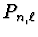
be the set of all partitions of the non-negative integer n no longer than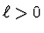
0$">,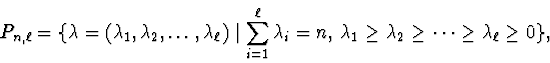
and
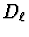
be the Laplace-Beltrami operator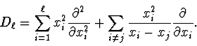
Then, for given
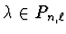
the zonal polynomial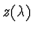
in variables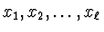
is not only a homogeneous degree n symmetric polynomial but also an eigenfunction of ,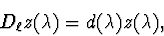
where
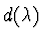
is the corresponding eigenvalue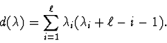
For a fixed basis of symmetric polynomials, is uniquely expressed under some regular conditions. For example, if
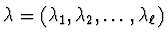
runs through all partitions in then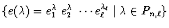
forms a basis where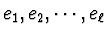
are fundamental symmetric polynomials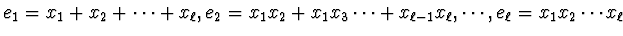
. If we take such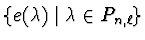
as a basis then can be expressed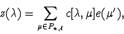
(where
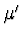
means the conjugate of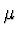
) and the coefficients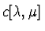
are uniquely determined.
The problem is to find
for given  and develop a symbolic algorithm to determine them.
The key is simplifying ,
that is,
finding a simple expression of
in terms of
and develop a symbolic algorithm to determine them.
The key is simplifying ,
that is,
finding a simple expression of
in terms of
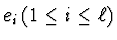
. The relevant problem is for the case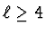
while a symbolic algorithm based on a recurrence formula is well-known for the case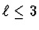
.In this paper, we give a simplification for the Laplace-Beltrami operator for any
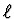
. Moreover, for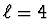
we give a symbolic algorithm including sufficient conditions that the coefficients vanish to determine the coefficients of zonal polynomials.